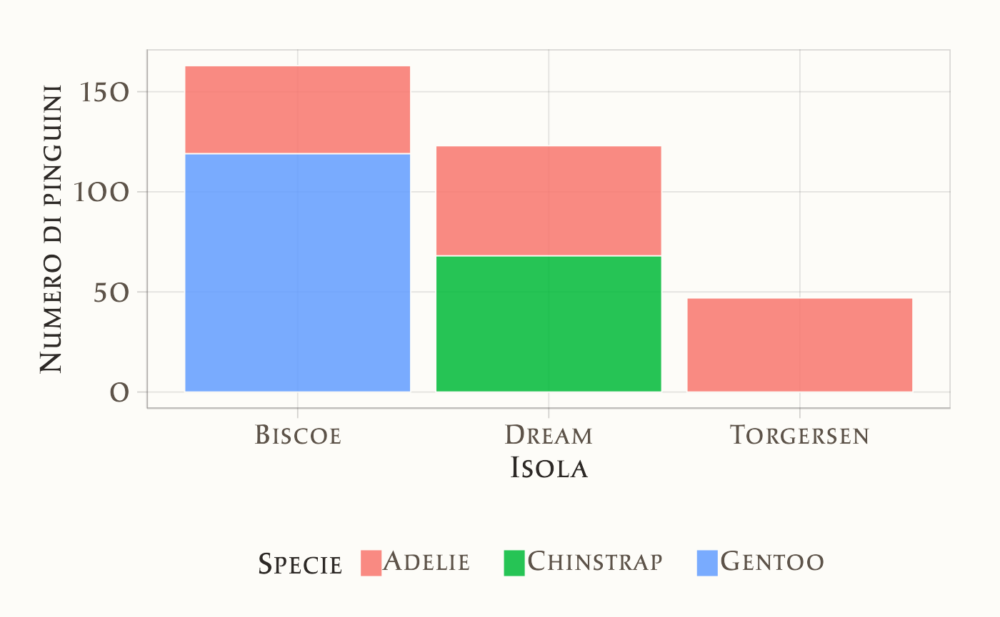
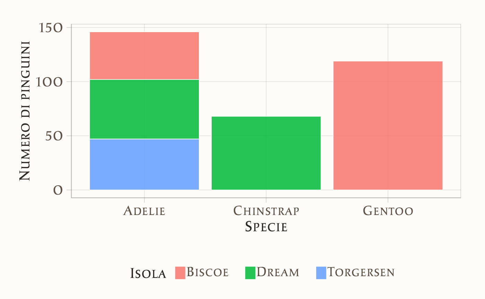

here::here("code", "_common.R") |>
source()
# Load packages
if (!requireNamespace("pacman")) install.packages("pacman")
pacman::p_load(tidyr, viridis, vcd)15 Esplorare i dati qualitativi
In questo capitolo imparerai a
- calcolare proporzioni e tabelle di contingenza
- costruire grafici a barre
Prerequisiti
- Leggere il capitolo Exploring categorical data di Introduction to Modern Statistics (2e) di Mine Çetinkaya-Rundel e Johanna Hardin.
Preparazione del Notebook
15.1 Introduzione
In questo capitolo ci concentreremo sull’analisi dei dati qualitativi.
15.2 Il dataset penguins
Per fornire esempi pratici, in questo capitolo utilizzeremo il dataset palmerpenguins, messo a disposizione da Allison Horst. I dati sono stati raccolti e resi disponibili da Dr. Kristen Gorman e dalla Palmer Station, parte del programma di ricerca ecologica a lungo termine Long Term Ecological Research Network. Il dataset contiene informazioni su 344 pinguini, appartenenti a 3 diverse specie, raccolte su 3 isole dell’arcipelago di Palmer, in Antartide. Per semplicità, i dati sono organizzati nel file penguins.csv.
15.3 Importare i Dati
Possiamo caricare i dati grezzi dal file penguins.csv in un DataFrame con il seguente comando:
d <- rio::import(here::here("data", "penguins.csv"))Esaminiamo i dati.
glimpse(d)
#> Rows: 344
#> Columns: 8
#> $ species <chr> "Adelie", "Adelie", "Adelie", "Adelie", "Adelie",…
#> $ island <chr> "Torgersen", "Torgersen", "Torgersen", "Torgersen…
#> $ bill_length_mm <dbl> 39.1, 39.5, 40.3, NA, 36.7, 39.3, 38.9, 39.2, 34.…
#> $ bill_depth_mm <dbl> 18.7, 17.4, 18.0, NA, 19.3, 20.6, 17.8, 19.6, 18.…
#> $ flipper_length_mm <int> 181, 186, 195, NA, 193, 190, 181, 195, 193, 190, …
#> $ body_mass_g <int> 3750, 3800, 3250, NA, 3450, 3650, 3625, 4675, 347…
#> $ sex <chr> "male", "female", "female", NA, "female", "male",…
#> $ year <int> 2007, 2007, 2007, 2007, 2007, 2007, 2007, 2007, 2…d |>
head()
#> species island bill_length_mm bill_depth_mm flipper_length_mm
#> 1 Adelie Torgersen 39.1 18.7 181
#> 2 Adelie Torgersen 39.5 17.4 186
#> 3 Adelie Torgersen 40.3 18.0 195
#> 4 Adelie Torgersen NA NA NA
#> 5 Adelie Torgersen 36.7 19.3 193
#> 6 Adelie Torgersen 39.3 20.6 190
#> body_mass_g sex year
#> 1 3750 male 2007
#> 2 3800 female 2007
#> 3 3250 female 2007
#> 4 NA <NA> 2007
#> 5 3450 female 2007
#> 6 3650 male 2007Per semplicità, rimuoviamo le righe con valori mancanti con la seguente istruzione:
df <- d |>
drop_na()df |>
summary()
#> species island bill_length_mm bill_depth_mm
#> Length:333 Length:333 Min. :32.10 Min. :13.10
#> Class :character Class :character 1st Qu.:39.50 1st Qu.:15.60
#> Mode :character Mode :character Median :44.50 Median :17.30
#> Mean :43.99 Mean :17.16
#> 3rd Qu.:48.60 3rd Qu.:18.70
#> Max. :59.60 Max. :21.50
#> flipper_length_mm body_mass_g sex year
#> Min. :172 Min. :2700 Length:333 Min. :2007
#> 1st Qu.:190 1st Qu.:3550 Class :character 1st Qu.:2007
#> Median :197 Median :4050 Mode :character Median :2008
#> Mean :201 Mean :4207 Mean :2008
#> 3rd Qu.:213 3rd Qu.:4775 3rd Qu.:2009
#> Max. :231 Max. :6300 Max. :200915.4 Tabelle di Contingenza
Una tabella di contingenza è uno strumento utilizzato per riassumere i dati di due variabili categoriali, ovvero variabili qualitative che assumono valori all’interno di un insieme finito di categorie. In una tabella di contingenza, ogni cella mostra quante volte si è verificata una combinazione specifica di categorie per le due variabili considerate.
Per esempio, se prendiamo in esame due variabili categoriali come “island” e “species” all’interno di un DataFrame df, ciascuna delle quali rappresenta rispettivamente l’isola di provenienza e la specie dei pinguini, possiamo costruire una tabella che mostra quante volte ciascuna combinazione di “island” e “species” appare nel nostro campione. In altre parole, la tabella di contingenza ci permette di vedere quante osservazioni ci sono per ogni combinazione di categorie tra queste due variabili.
table(df$island, df$species)
#>
#> Adelie Chinstrap Gentoo
#> Biscoe 44 0 119
#> Dream 55 68 0
#> Torgersen 47 0 0Questa tabella di contingenza mostra la distribuzione di tre specie di pinguini (Adelie, Chinstrap, Gentoo) rispetto a tre isole (Biscoe, Dream, Torgersen). Ogni cella rappresenta il numero di pinguini di una determinata specie presenti su ciascuna isola. Ecco un’interpretazione dettagliata:
- Isola Biscoe: Qui troviamo 44 pinguini della specie Adelie e 119 pinguini della specie Gentoo, mentre non sono presenti pinguini Chinstrap.
- Isola Dream: Questa isola ospita 55 pinguini Adelie e 68 pinguini Chinstrap, ma nessun pinguino della specie Gentoo.
- Isola Torgersen: Su quest’isola sono presenti solo 47 pinguini della specie Adelie, e nessun pinguino delle specie Chinstrap o Gentoo.
Possiamo dunque commentare dicendo:
- La specie Adelie è distribuita su tutte e tre le isole, con numeri notevoli sia su Biscoe (44), Dream (55), che Torgersen (47).
- La specie Chinstrap si trova solo sull’isola Dream (68 esemplari) e non è presente sulle altre due isole.
- La specie Gentoo si trova esclusivamente sull’isola Biscoe (119 esemplari), non essendo presente su Dream e Torgersen.
Questo suggerisce una distribuzione geografica specifica delle diverse specie di pinguini, con alcune specie limitate a determinate isole e altre distribuite più ampiamente.
15.5 Grafico a barre
15.5.1 Grafico a Barre con una Singola Variabile
Un grafico a barre è uno strumento comunemente utilizzato per rappresentare visivamente una singola variabile categoriale. Questo tipo di grafico mostra le diverse categorie su uno degli assi (solitamente l’asse orizzontale) e utilizza barre di altezza proporzionale per rappresentare la frequenza o il conteggio di ciascuna categoria sull’altro asse (solitamente l’asse verticale).
Ad esempio, in un dataset che contiene informazioni su diverse specie di pinguini, un grafico a barre potrebbe mostrare il numero di pinguini per ciascuna specie. Le specie vengono visualizzate come etichette lungo l’asse delle ascisse, mentre l’altezza delle barre rappresenta il numero di pinguini osservati per ciascuna specie.
Il grafico a barre consente di confrontare le dimensioni delle categorie in modo semplice e intuitivo.
Per i dati in esame, creiamo un grafico a barre che rappresenta il numero totale di pinguini per isola.
ggplot(df, aes(x = island)) +
geom_bar(alpha = 0.5) +
ggtitle("Numero totale di pinguini per isola") +
xlab("Isola") +
ylab("Numero di pinguini")
Un secondo grafico a barre mostra il numero totale di pinguini per specie.
ggplot(df, aes(x = species)) +
geom_bar(alpha = 0.5) +
ggtitle("Numero totale di pinguini per specie") +
xlab("Specie") +
ylab("Numero di pinguini")
15.5.2 Grafico a Barre con Due Variabili
È possibile visualizzare contemporaneamente le distribuzioni di due variabili categoriali utilizzando un grafico a barre. Questo tipo di grafico è particolarmente utile per esaminare la relazione tra due variabili categoriali.
In un grafico a barre con due variabili, una delle variabili viene rappresentata sull’asse orizzontale come categoria principale, mentre la seconda variabile è distinta tramite colori diversi o barre impilate. In questo modo, possiamo confrontare facilmente le frequenze o le proporzioni delle categorie della prima variabile, osservando allo stesso tempo come sono distribuite le categorie della seconda variabile all’interno di ciascuna categoria principale.
Ad esempio, visualizziamo il numero di pinguini per specie e isola. A qusto fine possiamo creare un grafico a barre dove le isole sono rappresentate sull’asse delle ascisse e i diversi colori delle barre mostrano la distribuzione delle specie su ciascuna isola. Questo approccio consente di esplorare come le due variabili categoriali (specie e isola) interagiscono visivamente.
ggplot(df, aes(x = island, fill = species)) +
geom_bar(position = "stack") +
ggtitle("Numero di pinguini per specie e isola") +
xlab("Isola") +
ylab("Numero di pinguini") +
labs(fill = "Specie")
In alternativa, è possibile creare un grafico a barre dove le specie sono rappresentate sull’asse delle ascisse e i diversi colori delle barre mostrano la distribuzione delle isole per ciascuna specie.
ggplot(df, aes(x = species, fill = island)) +
geom_bar(position = "stack") +
ggtitle("Numero di pinguini per isola e specie") +
xlab("Specie") +
ylab("Numero di pinguini") +
labs(fill = "Isola")
In alternativa all’uso delle frequenze assolute, possiamo rappresentare i dati utilizzando le frequenze relative. Questo approccio permette di confrontare meglio le categorie indipendentemente dal numero totale di osservazioni. Nella figura seguente, ad esempio, viene mostrata la proporzione di pinguini di ciascuna specie per ogni isola, evidenziando la distribuzione relativa delle specie su ogni isola, anziché il conteggio assoluto. Questa rappresentazione aiuta a visualizzare le differenze nella composizione delle specie, anche se il numero complessivo di pinguini varia tra le isole.
ggplot(df, aes(x = island, fill = species)) +
geom_bar(position = "fill") +
ggtitle("Proporzione di pinguini per specie e isola") +
xlab("Isola") +
ylab("Proporzione") +
labs(fill = "Specie")
15.6 Mosaic plots
Il Mosaic plot è una tecnica di visualizzazione particolarmente adatta per rappresentare tabelle di contingenza. Questo tipo di grafico somiglia a un grafico a barre impilate standard, ma con un vantaggio importante: oltre a visualizzare la suddivisione interna delle categorie, permette di vedere anche le dimensioni relative dei gruppi della variabile principale.
In altre parole, il Mosaic plot non solo mostra come si distribuiscono le categorie di una variabile secondaria all’interno di ogni gruppo della variabile principale, ma fornisce anche un’idea visiva della grandezza complessiva dei gruppi. Questo lo rende uno strumento utile per analizzare e interpretare le relazioni tra due variabili categoriali, evidenziando sia la proporzione all’interno di ciascun gruppo, sia la grandezza relativa tra i gruppi stessi.
mosaic(~ species + island, data = df, main = "Mosaic Plot of Species and Island")
15.7 Proporzioni di Riga e Colonna
Nelle sezioni precedenti abbiamo esaminato la visualizzazione di due variabili categoriali utilizzando grafici a barre e Mosaic plot. Tuttavia, non abbiamo ancora discusso come vengono calcolate le proporzioni mostrate in questi grafici. In questa sezione ci concentreremo sulla suddivisione frazionaria di una variabile rispetto a un’altra, esplorando come possiamo modificare la nostra tabella di contingenza per ottenere una visione più dettagliata delle proporzioni.
Questo ci permetterà di comprendere meglio le relazioni tra le due variabili, visualizzando non solo i conteggi assoluti, ma anche le proporzioni relative per riga o per colonna. Le proporzioni di riga mostrano la distribuzione di una variabile all’interno delle categorie di un’altra, mentre le proporzioni di colonna evidenziano la distribuzione inversa.
Calcoliamo le proporzioni di specie per isola.
# Calcola le proporzioni di riga
row_proportions <- df |>
count(island, species) |>
group_by(island) |>
mutate(proportion = n / sum(n)) |>
pivot_wider(names_from = species, values_from = proportion, values_fill = 0)
# Aggiungi una colonna "Totale" che rappresenta il totale di ciascuna riga
row_proportions_with_total <- row_proportions |>
mutate(Totale = rowSums(across(where(is.numeric))))
# Mostra la tabella con proporzioni di riga e il totale
print(row_proportions_with_total)
#> # A tibble: 5 × 6
#> # Groups: island [3]
#> island n Adelie Gentoo Chinstrap Totale
#> <chr> <int> <dbl> <dbl> <dbl> <dbl>
#> 1 Biscoe 44 0.270 0 0 44.3
#> 2 Biscoe 119 0 0.730 0 120.
#> 3 Dream 55 0.447 0 0 55.4
#> 4 Dream 68 0 0 0.553 68.6
#> 5 Torgersen 47 1 0 0 48Calcoliamo nuovamente le proporzioni, ma questa volta in funzione delle colonne (per isola).
# Calcola la tabella di contingenza
contingency_table <- xtabs(~ island + species, data = df)
# Calcola le proporzioni di colonna
column_proportions <- prop.table(contingency_table, margin = 2)
# Aggiungi una riga "Totale" con la somma di ciascuna colonna
column_proportions_with_total <- rbind(
column_proportions, Totale = colSums(column_proportions)
)
# Mostra la tabella con proporzioni di colonna e il totale
print(column_proportions_with_total)
#> Adelie Chinstrap Gentoo
#> Biscoe 0.3013699 0 1
#> Dream 0.3767123 1 0
#> Torgersen 0.3219178 0 0
#> Totale 1.0000000 1 115.8 Confronto tra Gruppi
Alcune delle analisi più interessanti emergono confrontando i dati numerici tra diversi gruppi. In questa sezione approfondiremo alcune delle tecniche che abbiamo già esplorato per visualizzare i dati numerici di più gruppi su uno stesso grafico e introdurremo nuovi metodi per confrontare i dati numerici tra gruppi. Queste tecniche ci permetteranno di osservare meglio le differenze e le somiglianze tra gruppi, mettendo in evidenza tendenze, variazioni e altre caratteristiche rilevanti.
Qui consideriamo due variabili qualitative. Creiamo un grafico a barre per confrontare la distribuzione del genere per specie.
ggplot(df, aes(x = species, fill = sex)) +
geom_bar(position = "dodge") +
ggtitle("Distribuzione del genere per specie") +
xlab("Specie") +
ylab("Conteggio")
Spesso, i confronti più interessanti riguardano come una variabile numerica varia in base a una o più categorie. Questo tipo di analisi ci aiuta a capire differenze tra gruppi e a individuare modelli o tendenze.
Nel grafico seguente, confrontiamo la distribuzione del peso corporeo (body_mass_g) in base alla specie e al genere. Le aree colorate rappresentano come si distribuisce il peso per maschi e femmine all’interno di ciascuna specie. Le linee più strette al centro delle aree colorate aggiungono ulteriori dettagli, mostrando i valori più comuni e come si concentrano i dati per ciascun gruppo.
ggplot(df, aes(x = species, y = body_mass_g, fill = sex)) +
geom_violin(position = position_dodge(width = 0.9), alpha = 0.5) +
geom_boxplot(position = position_dodge(width = 0.9), width = 0.2, alpha = 0.8) +
ggtitle("Distribuzione della massa corporea\nin base alla specie e al genere") +
xlab("Specie") +
ylab("Massa corporea (g)") +
labs(fill = "Genere")
- Aree colorate (grafico a violino):
- Rappresentano l’intera distribuzione dei pesi per ogni gruppo (specie e genere). Più l’area è larga in un punto, maggiore è il numero di pinguini con quel peso.
- Linee strette al centro (boxplot):
- Forniscono un riassunto visivo dei dati, mostrando dove i pesi si concentrano maggiormente e quanto variano all’interno di ciascun gruppo.
- Cosa possiamo osservare:
- Possiamo vedere facilmente se i maschi e le femmine di una stessa specie tendono ad avere pesi simili o differenti, e se c’è una certa sovrapposizione tra i due gruppi.
Informazioni sull’Ambiente di Sviluppo
sessionInfo()
#> R version 4.4.2 (2024-10-31)
#> Platform: aarch64-apple-darwin20
#> Running under: macOS Sequoia 15.1.1
#>
#> Matrix products: default
#> BLAS: /Library/Frameworks/R.framework/Versions/4.4-arm64/Resources/lib/libRblas.0.dylib
#> LAPACK: /Library/Frameworks/R.framework/Versions/4.4-arm64/Resources/lib/libRlapack.dylib; LAPACK version 3.12.0
#>
#> locale:
#> [1] C/UTF-8/C/C/C/C
#>
#> time zone: Europe/Rome
#> tzcode source: internal
#>
#> attached base packages:
#> [1] grid stats graphics grDevices utils datasets methods
#> [8] base
#>
#> other attached packages:
#> [1] vcd_1.4-13 MASS_7.3-61 viridis_0.6.5 viridisLite_0.4.2
#> [5] ggpubr_0.6.0 ggExtra_0.10.1 gridExtra_2.3 patchwork_1.3.0
#> [9] bayesplot_1.11.1 psych_2.4.6.26 scales_1.3.0 markdown_1.13
#> [13] knitr_1.49 lubridate_1.9.3 forcats_1.0.0 stringr_1.5.1
#> [17] dplyr_1.1.4 purrr_1.0.2 readr_2.1.5 tidyr_1.3.1
#> [21] tibble_3.2.1 ggplot2_3.5.1 tidyverse_2.0.0 rio_1.2.3
#> [25] here_1.0.1
#>
#> loaded via a namespace (and not attached):
#> [1] gtable_0.3.6 xfun_0.49 htmlwidgets_1.6.4 rstatix_0.7.2
#> [5] lattice_0.22-6 tzdb_0.4.0 vctrs_0.6.5 tools_4.4.2
#> [9] generics_0.1.3 parallel_4.4.2 fansi_1.0.6 pacman_0.5.1
#> [13] R.oo_1.27.0 pkgconfig_2.0.3 data.table_1.16.2 lifecycle_1.0.4
#> [17] compiler_4.4.2 farver_2.1.2 munsell_0.5.1 mnormt_2.1.1
#> [21] carData_3.0-5 httpuv_1.6.15 htmltools_0.5.8.1 yaml_2.3.10
#> [25] Formula_1.2-5 car_3.1-3 pillar_1.9.0 later_1.4.1
#> [29] R.utils_2.12.3 abind_1.4-8 nlme_3.1-166 mime_0.12
#> [33] tidyselect_1.2.1 digest_0.6.37 stringi_1.8.4 labeling_0.4.3
#> [37] rprojroot_2.0.4 fastmap_1.2.0 colorspace_2.1-1 cli_3.6.3
#> [41] magrittr_2.0.3 utf8_1.2.4 broom_1.0.7 withr_3.0.2
#> [45] backports_1.5.0 promises_1.3.2 timechange_0.3.0 rmarkdown_2.29
#> [49] ggsignif_0.6.4 R.methodsS3_1.8.2 zoo_1.8-12 hms_1.1.3
#> [53] shiny_1.9.1 evaluate_1.0.1 lmtest_0.9-40 miniUI_0.1.1.1
#> [57] rlang_1.1.4 Rcpp_1.0.13-1 xtable_1.8-4 glue_1.8.0
#> [61] jsonlite_1.8.9 R6_2.5.1